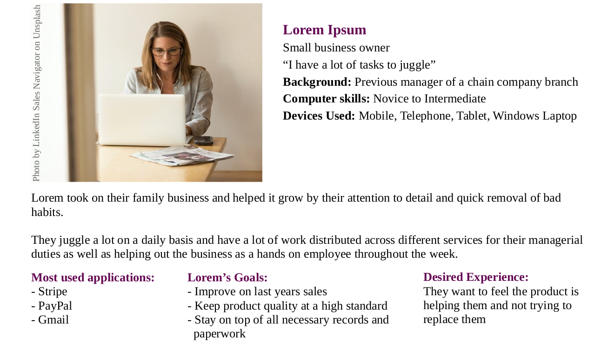

1 Click Startup is a free and open source project that lets small business' have integrated control of their daily work-flows
1 Click Startup is a modern approach to small business work-flows.
- Manager Interface. The manager interface streamlines communication between employees and suppliers.
- Employee Interface. Employees fill in a series of digital forms which log important information about the processes they complete in their work.
- Process Mining. Data will be piped through a process mining application and the results will be forwarded to the manager's dashboard.
- Manager Dashboard. An exclusive manager dashboard will allow them to track key productivity metrics and highlight employee engagement, as well as visualize the business processes to identify bottlenecks.
The end project will be the technical implication of the product (as described above) using tools such as Docker and a Flask REST API webserver.
In addition to this, we also want to provide a testing framework with simulated users and managers using a tool such as PySelenium.
What's In This Document
üõ´ Get Up and Running with Local Development
There are a few steps that will help you get everything you need running on your local machine.
- 1. Clone this repository (feel free to check out this guide if you're new to cloning
üõ∏)
git clone https://github.com/barrysweeney/1-click-startup.git - 2. Run the local development containers
cd 1-click-startup(check out this guide if you need to install Docker Compose üê≥)
sudo docker-compose up - 3. The relevant ports are now exposed and can be accessed on your local machine
- Frontend Interface http://localhost:8000
- Backend Webserver http://localhost:5000
- Landing Page http://localhost:4200
- Selenium Web Driver http://localhost:4444
- 4. Open backend, frontend, or landing page folders in your IDE of choice and start coding.
ü§ñ Automation
User experience design details are listed below but for now I feel like it's worth skipping ahead to our first glimpse at automating our user, and work backwards from there.
As one of the main goals of this project is to create automated users, it's worth exploring an example of one of the tasks that have been automated.
We'll have PySelenium interact with our user interface to populate and submit a form to our backend Flask webserver which will then store data in a sqlite3 database.
üõë Hold Up ✋ Before we go any further I'd like to mention that it isn't essential to understand concepts like containers and Docker compose network at this point. When a new concept pops up I'll make sure to link to it's documentation for future reference. For now feel free to gloss over it and just get a feel for the overall flow of data and how our different services communicate. As an aside, the best resource I've found for learning these concepts was this course which you can watch on a PluralSight free trial.
In fact before we dive into code, let's set the scene with an analogy: We can think of containers as rooms in our hotel, and our "Docker network" as our hallway that connects all of our rooms. Our localhost is our hotel reception (or lobby if you watched a lot of Suite Life of Zach and Cody).
When we run sudo docker-compose up we're starting different containers relating to our
application.
We're getting our rooms ready and letting our guests into them.
Our automated user lives in one of these containers/rooms. With the following line of code, they can get the webdriver for Selenium which allows them to access the web.
They walk down the corridor to the Webdriver room to get the key for the door to the Web Browser room.
driver = webdriver.Remote(desired_capabilities=webdriver.DesiredCapabilities.FIREFOX,
command_executor="http://172.17.0.1:4444/wd/hub")
We use http://172.17.0.1 instead of http://localhost since we're communicating from within one container to a different container (on port 4444 of the same Docker network... same hallway)
With the next line of code our automated employee can access the customer order page of the frontend user interface which is in a different container accessible at port 8000 on our Docker network.
driver.get("http://172.17.0.1:8000/customer-order")This is what our employee now sees:

They can now fill in and submit the form:
driver.find_element_by_id("customer-name").send_keys("John Doe")
driver.find_element_by_id("customer-contact-number").send_keys("+44700000010")
driver.find_element_by_id("customer-contact-number").send_keys("Bottle Water")
driver.find_element_by_id("submit-customer-order").click()
If we look at the code for this form we can see that it is sending a POST request to our backend Flask webserver running on port 5000 of our Docker network (We take the letter we wrote in the frontend room to Flask's room).
<form method="post" action="http://172.17.0.1:5000/customer/order/new">...Let's look at what's happening over on the server side by visiting our Flask webserver.
@app.route('/customer/order/new', methods=['post'])
def customer_order():
name = request.form['customer-name']
contact_number = request.form['customer-contact-number']
order = request.form['customer-order']
c.execute("INSERT INTO CUSTOMER_ORDER(CUSTOMER_NAME,CONTACT_NUMBER,CUSTOMER_ORDER) \
VALUES (?,?,?)", (name, contact_number, order,))
conn.commit()
return 'OK'
We're extracting the data from the form that was posted and inserting it as an new record into our customer order table.
We can see that Flask and sqlite3 share the same room, if it start's getting too crowded we might want to prepare a new room for sqlite3
Although this is only a single use case, that of an employee taking a customer order, it highlights the flow of data through some of our integrated services.
⛏ Process Mining
As users of 1 Click Startup perform various tasks they leave a log of data which we can mine to analyze processes and workflows. We can pip the results of our process mining to the manager's dashboard.
üë§ User Experience (UX) Design
We want to solve problems our user is facing and improve their overall work-flow. In order to do that we need to define our user and figure out more specific details regarding their current work-flows, including the services and platforms they use. We'll also take a look at the approaches being employed by others with similarities to our product.
Research
Surveys
Surveys, especially those with no follow-up questions, provide quantitative data from which we can analyze responses to recognize patterns.
You can find a report of the survey by opening this PDF file.
Analyze
We can take the raw data we gathered from our interview (transcript omitted for confidentiality) and surveys to define our target user's behaviour and attitudes.
Use Cases
Use cases can be defined with a jobs to be done (JTBD) template that follows a situation, motivation, expected outcome format
Manager Use Cases
| Situation (When) | Motivation (I want to) | Expected Outcome (So I can) |
|---|---|---|
| Stock is low | Order Stock | Be prepared for orders |
| Employee joins | Train employee | Confidently put them on a shift |
| Employee leaves | Hire employee | Have sufficient staff |
| Customer complains | Communicate with customer | Apologize and find problem source |
| Quality decreases | Communicate with staff | Get standards back to where they should be |
| Shift ends | Record sales | Update accounts and make predictions |
| Sales decrease | Communicate with staff and investigate other local businesses | Determine the cause of sales decreasing |
| Product sells out | Inform customers or transfer product from other store | Stop taking orders or continue taking orders |
| Week is about to begin | Send hours to staff | Make any necessary changes |
| Week is over | Pay staff | Keep their next wage payment separate |
| Problem with customer order app | Communicate with the company who developed the app | Have customer order app working again |
| Employee complains | Communicate with employee | Determine cause of complaint and potential solutions |
| Bill arrives by post | Pay bill | Not accrue additional fees |
| Problem with stock | Contact supplier | Get a refund or replacement |
Employee Use Cases
| Situation (When) | Motivation (I want to) | Expected Outcome (So I can) |
|---|---|---|
| Phone rings | Answer | Take order or answer customer query |
| Order comes through app | Read order | Prepare order |
| Shift begins | Turn on equipment | Prepare orders later |
| Shift ends | Turn off equipment | Prevent fire risk and electricity cost |
| There are no orders to be made | Clean or prepare for future orders | Be prepared for future orders |
| Shift needs changed | Communicate with management and colleagues | Have colleague cover shift and hours updated |
| Shift ends | Lock shop | Keep equipment and cash inside safe |
| Shift ends | Count cash | Send sales details to manager |
| Shift ends | Clean and prepare equipment for next day | Not be reprimanded |
| Customer enters shop | Approach customer | Take their order |
| Customer order ready | Give it to the customer and take their payment | Complete the order |
Personas
We capture the the common behaviours that meaningfully characterize each user into a persona. In our case we'll have a persona for both a manager and an employee since their needs will be very different.
Manager Persona
User Persona

üõ† How to Contribute
Any help or feedback to the project is welcome in any form, whether it be tutorials, code for new features, bug fixes, or design ideas.
Check out the Contributing Guide.